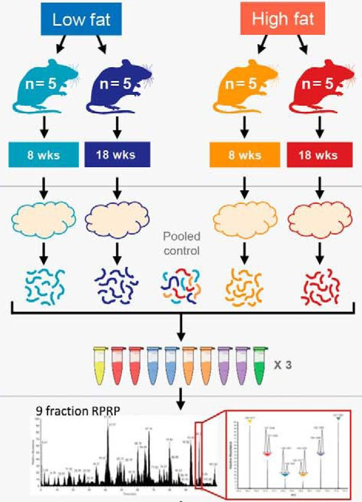

library("msqrob2")
library("ggplot2")
library("patchwork")
library("ggrepel")
library("dplyr")7 The mouse diet use case: a Skyline TMT DDA dataset
7.1 Introduction
If you never used msqrob2, we suggest to familiarise yourself with the basic concepts chapter first. Note that TMT experiments imposes complex designs, hence we also suggest reading the advanced concepts chapter.
We will demonstrate the msqrob2TMT workflow, a data processing and modelling workflow dedicated to the analysis of TMT-based proteomics datasets. We will demonstrated the workflow using the study published by Plubell et al. (2017), illustrating the statistical concepts using a real-life use case.
Since this chapter uses a real-life study, we cannot objectively assess the results. The advanced concepts chapter demonstrates an msqrob2TMT analysis with ground truth information.
Before delving further into the use case, let us prepare our computational environment.
7.2 Load packages
First, we load the msqrob2 package and additional packages for data manipulation and visualisation.
We also configure the parallelisation framework.
library("BiocParallel")
register(SerialParam())7.3 Load data
7.3.1 Experimental context
The data used in this vignette has been published by Plubell et al. (2017) (PXD005953). The objective of the experiment was to explore the impact of low-fat and high-fat diets on the proteomic content of adipose tissue in mice. It also assesses whether the duration of the diet may impact the results. The authors assigned twenty mice into four groups (5 mice per group) based on their diet, either low-fat (LF) or high-fat (HF), and the duration of the diet, which was classified as short (8 weeks) or long (18 weeks). Samples from the epididymal adipose tissue were extracted from each mice. The samples were then randomly distributed across three TMT 10-plex mixtures for analysis. In each mixture, two reference labels were used, each containing pooled samples that included a range of peptides from all the samples. Not all labels were used, leading to an unbalanced design. Each TMT 10-plex mixture was fractionated into nine parts, resulting in a total of 27 MS runs.

7.3.2 Getting the data
The data were reanalyzed by Huang et al. (2020) and have been deposited in the MSV000084264 MASSiVE repository, but we will retrieve the timestamped data from our Zenodo repository. We need 2 files: the Skyline identification and quantification table generated by the authors and the sample annotation files1.
library("BiocFileCache")
bfc <- BiocFileCache()
psmFile <- bfcrpath(bfc, "https://zenodo.org/records/14767905/files/mouse_psms.txt?download=1")
annotFile <- bfcrpath(bfc, "https://zenodo.org/records/14767905/files/mouse_annotations.csv?download=1")This analysis starts with the PSM table. Note that columns that start with "Abundance." contain the quantitative values for each TMT label.
psms <- read.delim(psmFile)| Checked | Confidence | Identifying.Node | PSM.Ambiguity | Annotated.Sequence | Modifications | X..Protein.Groups | X..Proteins | Master.Protein.Accessions | Master.Protein.Descriptions | Protein.Accessions | Protein.Descriptions | X..Missed.Cleavages | Charge | DeltaScore | DeltaCn | Rank | Search.Engine.Rank | m.z..Da. | MH…Da. | Theo..MH…Da. | DeltaM..ppm. | Deltam.z..Da. | Activation.Type | MS.Order | Isolation.Interference…. | Average.Reporter.S.N | Ion.Inject.Time..ms. | RT..min. | First.Scan | Spectrum.File | File.ID | Abundance..126 | Abundance..127N | Abundance..127C | Abundance..128N | Abundance..128C | Abundance..129N | Abundance..129C | Abundance..130N | Abundance..130C | Abundance..131 | Quan.Info | Ions.Score | Identity.Strict | Identity.Relaxed | Expectation.Value | Percolator.q.Value | Percolator.PEP |
|---|---|---|---|---|---|---|---|---|---|---|---|---|---|---|---|---|---|---|---|---|---|---|---|---|---|---|---|---|---|---|---|---|---|---|---|---|---|---|---|---|---|---|---|---|---|---|---|---|
| False | High | Mascot (A2) | Unambiguous | [K].aIDILDR.[SM] | N-Term(TMT6plex) | 1 | 1 | Q61084 | Mitogen-activated protein kinase kinase kinase 3 OS=Mus musculus GN=Map3k3 PE=1 SV=1 | 0 | 2 | 0 | 0 | 1 | 1 | 522.8161 | 1044.625 | 1044.625 | -0.14 | -0.00008 | CID | MS2 | 2.279464 | 10.5 | 42.390 | 63.4111 | 16103 | PAMI-194_Mouse_U-Dd_TMT_40ug_28pctACN_25cm_120min_20160426_OT.raw | F3.6 | 2382.454 | 2429.068 | 2707.243 | 3317.650 | 5035.093 | 3031.7993 | 4808.5522 | 2583.115 | 3103.613 | 2795.283 | NA | 40 | 25 | 18 | 0.0003802 | 0.0008956 | 0.0111900 | ||
| False | High | Mascot (C2) | Unambiguous | [K].aLEENNNFSk.[M] | N-Term(TMT6plex); K10(TMT6plex) | 1 | 1 | P55821 | Stathmin-2 OS=Mus musculus GN=Stmn2 PE=1 SV=1 | 0 | 2 | NA | 0 | 1 | 2 | 812.4410 | 1623.875 | 1623.874 | 0.26 | 0.00021 | CID | MS2 | 20.489330 | 0.8 | 116.000 | 38.9028 | 7622 | PAMI-176_Mouse_A-J_TMT_40ug_22pctACN_25cm_120min_20160223_OT.raw | F1.3 | 1112.530 | NA | NA | NA | NA | 389.5883 | 963.0698 | NA | NA | NA | NA | 49 | 29 | 22 | 0.0000932 | 0.0000000 | 0.0000510 | ||
| False | High | Mascot (C2) | Rejected | [K].eMISDIk.[F] | N-Term(TMT6plex); K7(TMT6plex) | 0 | 1 | Q5SQM0 | Echinoderm microtubule-associated protein-like 6 OS=Mus musculus GN=Eml6 PE=2 SV=1 | 0 | 2 | 0 | 0 | 1 | 1 | 647.3786 | 1293.750 | 1293.749 | 0.84 | 0.00054 | CID | MS2 | 62.114720 | 25.4 | 50.658 | 45.5494 | 10094 | PAMI-176_Mouse_A-J_TMT_40ug_24pctACN_25cm_120min_20160223_OT.raw | F1.4 | 8606.559 | 10042.301 | 7976.240 | 5196.599 | 9381.061 | 12227.7070 | 6418.2720 | 5791.740 | 9665.493 | 5747.680 | NA | 11 | 28 | 21 | 0.5635688 | 0.0016120 | 0.0284500 | ||
| False | High | Mascot (C2) | Unambiguous | [KR].iIDFGLAR.[HQRT] | N-Term(TMT6plex) | 4 | 3 | Q3UIZ8; Q5SUV5; Q8VCR8 | Myosin light chain kinase 3 OS=Mus musculus GN=Mylk3 PE=1 SV=1; Myosin light chain kinase family member 4 OS=Mus musculus GN=Mylk4 PE=1 SV=2; Myosin light chain kinase 2, skeletal/cardiac muscle OS=Mus musculus GN=Mylk2 PE=1 SV=2 | 0 | 2 | 0 | 0 | 1 | 1 | 567.3476 | 1133.688 | 1133.688 | -0.09 | -0.00005 | CID | MS2 | 30.288610 | 13.5 | 41.830 | 70.4334 | 19108 | PAMI-176_Mouse_A-J_TMT_40ug_30pctACN_25cm_120min_20160223_OT.raw | F1.7 | 4964.429 | 5950.643 | 3133.549 | 3321.042 | 2914.397 | 3274.3197 | 3284.3334 | 4714.300 | 3846.105 | 5461.438 | NA | 41 | 24 | 17 | 0.0002663 | 0.0000983 | 0.0004159 | ||
| False | High | Mascot (B2) | Unambiguous | [KR].iQLWDTAGQER.[FY] | N-Term(TMT6plex) | 7 | 1 | O35963 | Ras-related protein Rab-33B OS=Mus musculus GN=Rab33b PE=1 SV=1 | 0 | 3 | NA | 0 | 1 | 2 | 515.9459 | 1545.823 | 1545.822 | 0.49 | 0.00025 | CID | MS2 | 14.174430 | 5.2 | 116.000 | 63.1792 | 15687 | PAMI-176_Mouse_K-T_TMT_40ug_26pctACN_25cm_120min_20160223_OT.raw | F2.5 | 2202.812 | 1313.995 | 1942.837 | 2381.060 | 1443.969 | 1701.8316 | 968.0946 | 1867.904 | 910.823 | 1371.243 | NA | 28 | 28 | 21 | 0.0092083 | 0.0000000 | 0.0000261 | ||
| False | High | Mascot (A2) | Unambiguous | [K].aIDILDR.[SM] | N-Term(TMT6plex) | 1 | 1 | Q61084 | Mitogen-activated protein kinase kinase kinase 3 OS=Mus musculus GN=Map3k3 PE=1 SV=1 | 0 | 2 | 0 | 0 | 1 | 1 | 522.8161 | 1044.625 | 1044.625 | -0.14 | -0.00008 | CID | MS2 | 21.614820 | 19.0 | 116.000 | 62.4027 | 15935 | PAMI-194_Mouse_U-Dd_TMT_40ug_26pctACN_25cm_120min_20160426_OT.raw | F3.5 | 6064.501 | 3790.208 | 4328.930 | 6528.889 | 6080.098 | 7705.8087 | 7836.0572 | 4606.420 | 5347.845 | 5869.469 | NA | 42 | 25 | 18 | 0.0002350 | 0.0005618 | 0.0067230 |
We also load the annotation table. Each row in the annotation table contains information for one sample (the table below shows the first 6 rows).
coldata <- read.csv(annotFile)| Channel | Condition | Run | BioReplicate | Mixture | Fraction | TechRepMixture |
|---|---|---|---|---|---|---|
| 126 | Long_LF | PAMI-176_Mouse_A-J_TMT_40ug_30pctACN_25cm_120min_20160223_OT.raw | PAMI-176_Mouse_A-J.X126 | PAMI-176_Mouse_A-J | 40ug_30pctACN_25cm_120min_20160223 | 1 |
| 126 | Long_LF | PAMI-176_Mouse_A-J_TMT_40ug_28pctACN_25cm_120min_20160223_OT.raw | PAMI-176_Mouse_A-J.X126 | PAMI-176_Mouse_A-J | 40ug_28pctACN_25cm_120min_20160223 | 1 |
| 126 | Long_LF | PAMI-176_Mouse_A-J_TMT_40ug_90pctACN_25cm_120min_20160223_OT.raw | PAMI-176_Mouse_A-J.X126 | PAMI-176_Mouse_A-J | 40ug_90pctACN_25cm_120min_20160223 | 1 |
| 126 | Long_LF | PAMI-176_Mouse_A-J_TMT_40ug_40pctACN_25cm_120min_20160223_OT.raw | PAMI-176_Mouse_A-J.X126 | PAMI-176_Mouse_A-J | 40ug_40pctACN_25cm_120min_20160223 | 1 |
| 126 | Long_LF | PAMI-176_Mouse_A-J_TMT_40ug_22pctACN_25cm_120min_20160223_OT.raw | PAMI-176_Mouse_A-J.X126 | PAMI-176_Mouse_A-J | 40ug_22pctACN_25cm_120min_20160223 | 1 |
| 126 | Long_LF | PAMI-176_Mouse_A-J_TMT_40ug_24pctACN_25cm_120min_20160223_OT.raw | PAMI-176_Mouse_A-J.X126 | PAMI-176_Mouse_A-J | 40ug_24pctACN_25cm_120min_20160223 | 1 |
We perform a little cleanup of the sample annotations to generate the information needed for later data modelling, namely
- We extract the diet type from the condition variable.
- We extract the diet duration from the condition variable.
- We rename the
Channelcolumn toLabelfor more clarity with the main text.
coldata$Duration <- gsub("_.*", "", coldata$Condition) ## 1.
coldata$Diet <- gsub(".*_", "", coldata$Condition) ## 2.
colnames(coldata)[1] <- "Label" ## 3.We will also subset the data set to reduce computational costs. If you want to run the vignette on the full data set, you can skip this chunk. We here randomly sample 500 proteins from the experiment.
proteinIds <- unique(psms$Protein.Accessions)
set.seed(1234)
psms <- psms[psms$Protein.Accessions %in% sample(proteinIds, 500), ]7.3.3 The QFeatures data class
We combine the two tables into a QFeatures object. We need to point to the column containing the run information. For the annotation table, this is simply the Run column. For the Skyline table, this is the Spectrum.File column. We also add a quantCols column in the annotation table. We also simply the run names upon conversion for conciseness.
coldata$runCol <- coldata$Run
coldata$quantCols <- paste0("Abundance..", coldata$Label)
mouse <- readQFeatures(psms, colData = coldata,
quantCols = unique(coldata$quantCols),
runCol = "Spectrum.File", name = "psms")
names(mouse) <- sub("^.*(Mouse.*ACN).*raw", "\\1", names(mouse))
mouseAn instance of class QFeatures (type: bulk) with 27 sets:
[1] Mouse_A-J_TMT_40ug_14pctACN: SummarizedExperiment with 198 rows and 10 columns
[2] Mouse_A-J_TMT_40ug_20pctACN: SummarizedExperiment with 481 rows and 10 columns
[3] Mouse_A-J_TMT_40ug_22pctACN: SummarizedExperiment with 514 rows and 10 columns
...
[25] Mouse_U-Dd_TMT_40ug_30pctACN: SummarizedExperiment with 726 rows and 10 columns
[26] Mouse_U-Dd_TMT_40ug_40pctACN: SummarizedExperiment with 566 rows and 10 columns
[27] Mouse_U-Dd_TMT_40ug_90pctACN: SummarizedExperiment with 251 rows and 10 columns We now have a QFeatures object with 27 sets, each containing data associated with an MS run.
7.4 Data preprocessing
msqrob2 relies on the QFeatures data structure, meaning that we can directly make use of QFeatures’ data preprocessing functionality (see also the QFeatures documentation).
7.4.1 Encoding missing values
Peptides with zero intensities are missing peptides and should be represent with a NA value rather than 0 (see Encoding missing values).
mouse <- zeroIsNA(mouse, names(mouse))7.4.2 Sample filtering
We remove the reference samples that were used by the MSstatsTMT authors to obtain normalisation factors since msqrob2TMT workflows do not require normalisation from reference label. The information about which samples are normalisation samples is available from the colData, in the Condition column.
table(mouse$Condition)
Long_HF Long_LF Long_M Norm Short_HF Short_LF
45 45 36 54 45 45 We remove any sample that is marked as Norm. We also remove sample that are annotated as Long_M since we could not find documentation for this group.
mouse <- subsetByColData(
mouse, mouse$Condition != "Norm" & mouse$Condition != "Long_M"
)7.4.3 PSM filtering
We filter features for which more than 70% of the intensities are missing in a run. We keep the spectrum as soon as the reporter ions are observed in at least 3 out of 10 TMT labels of the run (same cut-off as applied in Huang et al. (2020)).
mouse <- filterNA(mouse, names(mouse), pNA = 0.7) ## 2.We next remove PSMs that could not be mapped to a protein or that map to multiple proteins (the protein identifier contains multiple identifiers separated by a ;). We use filterFeatures() that will keep the row that fulfill the condition below. Note that Protein.Accessions is a column generated by Skyline that is available in the rowData.
mouse <- filterFeatures(
mouse, ~ Protein.Accessions != "" & ## Remove failed protein inference
!grepl(";", Protein.Accessions)) ## Remove protein groupsPeptide ions that were identified with multiple PSMs in a run are collapsed to the PSM with the highest summed intensity over the labels, a strategy that is also used by MSstats. We will again use filterFeatures(), but the highest summed intensity for each PSM is not available in the rowData, so we need to create it manually.
We therefore loop over each set:
- Make a new variable for ionID in the
rowData, which is defined as the peptide sequence and its charge. - We calculate the
rowSumsfor each ion. - Make a new variable
psmRankthat ranks the PSMs for each ion based on the summed intensity. - We store the new information back in the
rowData. - We keep the PSM with the highest summed intensity, that is that ranks first (note that PSM unique to an ion will always rank first).
for (i in names(mouse)) {
rowdata <- rowData(mouse[[i]])
rowdata$ionID <- paste0(rowdata$Annotated.Sequence, rowdata$Charge) ## 1.
rowdata$rowSums <- rowSums(assay(mouse[[i]]), na.rm = TRUE) ## 2.
rowdata <- data.frame(rowdata) |>
group_by(ionID) |>
mutate(psmRank = rank(-rowSums)) ## 3.
rowData(mouse[[i]]) <- DataFrame(rowdata) ## 4.
}
mouse <- filterFeatures(mouse, ~ psmRank == 1) ## 5.So, we implicitly collapsed the PSM-level data into peptide-ion data, where each row represents a PSM, but also a unique ion within a run. So we will refer to the data as “ion-level”.
7.4.4 Standard preprocessing workflow
We can now prepare the data for modelling. The workflow ensures the data complies to msqrob2’s requirements:
- Intensities are log-transformed.
- Samples are normalised.
- (optionally) PSMs intensities are summarised into protein abundance values for protein-level workflows.
sNames <- names(mouse)
mouse <- logTransform( ## 1.
mouse, sNames, name = paste0(sNames, "_log"), base = 2
)
mouse <- normalize( ## 2.
mouse, paste0(sNames, "_log"), name = paste0(sNames, "_norm"),
method = "center.median"
)
mouse <- aggregateFeatures( ## 3.
mouse, i = paste0(sNames, "_norm"), name = paste0(sNames, "_proteins"),
fcol = "Protein.Accessions", fun = MsCoreUtils::medianPolish,
na.rm=TRUE
)We conclude the preprocessing by joining the assays of the different runs in a single ion set for ion-level models. In order to correctly match peptide ions across rus, we use ionID as a row identifier.
mouse <- joinAssays(mouse, paste0(sNames, "_norm"), fcol = "ionID", "ions_norm")We also join the protein sets for protein-level models. We omit fcol and will merge rows based on their row name (protein identifier).
mouse <- joinAssays(mouse, paste0(sNames, "_proteins"), "proteins")7.5 Data exploration
As described above, the samples originate from mice that were either subject to a low-fat (LF) or high-fat (HF) diet. Moreover, each diet was maintained for a short duration (Short) or a long duration (Long). Note that each group contains 5 mice but the peptides from each sample have been fractionated in 9 fractions, leading to 45 units per group.
In this case, we are interested in the effects of diet type and the effect of diet duration. The table below confirms we have a balanced design for each condition.
table(Diet = mouse$Diet, Duration = mouse$Duration) Duration
Diet Long Short
HF 45 45
LF 45 45Furthermore, there are potential unwanted sources of variation: the experimental unit (i.e. the mouse, BioReplicate), the fraction (Fraction), the run (Run), the TMT mixture (Mixture).
We will explore the main sources of variation in the data (see Data exploration). Unfortunately, the peptide ion data contains too many missing values and cannot be explored using standard dimension reduction approaches. omicsGMF (Segers et al. 2025) provides an interesting alternative, but is still in its early stage and will not be included here. We will therefore run a MDS analysis on the protein-level data instead, which contains less missing values.
library("scater")
se <- getWithColData(mouse, "proteins") |>
as("SingleCellExperiment") |>
runMDS(exprs_values = 1)We can now plot the MDS and colour each sample based on different potential sources of variation.
plotMDS(se, colour_by = "Run") + ggtitle("Coloured by Run") +
scale_colour_manual(values = rainbow(27)) +
plotMDS(se, colour_by = "Fraction") + ggtitle("Coloured by Fraction") +
plotMDS(se, colour_by = "BioReplicate") + ggtitle("Coloured by BioReplicate") +
plotMDS(se, colour_by = "Mixture") + ggtitle("Coloured by Mixture") +
plotMDS(se, colour_by = "Diet") + ggtitle("Coloured by Diet") +
plotMDS(se, colour_by = "Duration") + ggtitle("Coloured by Duration") &
theme(legend.position = "none") 
The data exploration leads to several observations:
- The strongest source of variation is associated with the MS acquisition run.
- Part of this run effect is influenced by which fraction it contains since samples from the same fraction tend to be closer than samples from different fractions. (TODO DISCUSS)
- It is difficult to identify an effect of mouse (biological replicate) because every run contains distinct mice. However, this does not exclude an effect of mice which has been identified as a potential source of variation and hence should still be modelled. (TODO DISCUSS)
- There is potentially also an effect of TMT mixture since samples from the same mixtures tend to cluster together (in the center of the plot). However, this effect are more subtle to detect and difficult to disentangle from the run and fraction effects.
- Although again very subtle, we can see within each run that samples from the mice with the same diet tends to group together. However, these effects are overwhelmed by the run effects. An effect of duration is to subtle to pinpoint from the current data exploration.
Data modelling disentangles the different sources of variation, given their are properly defined in the model, hence the next section.
7.6 Data modelling
The preprocessed data can now be modelled to answer biologically relevant questions.
7.6.1 Sources of variation
Proteomics data contain several sources of variation that need to be accounted for by the model:
Treatment of interest: we model the source of variation induced by the experimental treatment of interest as a fixed effect. Fixed effects are effect that are considered non-random, i.e. the treatment effect is assumed to be the same and reproducible across repeated experiments, but it is unknown and has to be estimated. We will include
Dietas a fixed effect that models the fact that a change in diet type can induce changes in protein abundance. Similarly, we also includeDurationas a fixed effect to model the change in protein abundance induces by the diet duration. Finally, we will also include an interaction between the two variables allowing that the changes in protein abundance induced by diet type can be different whether the mice were fed for a short or long duration.Pseudo-replication: the experiment involves biological replication as the adipose tissue extracts were sampled from 20 mice (5 mice per Diet x Duration combination). The tissue from each mouse was prepared in a single TMT mixture, but each mixture was acquired in 9 fractions, so we have 9 measures for each mice. While the treatment is applied at the mice level (experimental unit), we actually measure 9 fractions as an outcome (observational unit). We refer to pseudo-replication when the observational unit is different from the experimental unit. We therefore need to account for the potential correlation among pseudo-replicates from the same mouse compared to between different mice. These effects are typically modelled as random effects, and are assumed to be i.i.d normally distributed with mean 0 and constant variance, \(u_{mouse} \sim N(0,\sigma^{2,\text{mouse}})\). This random effect models the correlation of the log2-intensities of pseudo replicates, explicitly.
length(unique(mouse$BioReplicate))[1] 20- Labelling effects: the 20 mouse adipose tissue samples have been labelled using 18-plex TMT. We can expect that samples measured within the same TMT label may be more similar than samples measured within different TMT labels. Since these effects may not be reproducible from one experiment to another, for instance because each TMT kit may potentially contain different impurity ratios, we can account for this source of variation using a random effect for TMT label.
length(unique(mouse$Label))[1] 10- Mixture effects: the 20 mouse samples were assigned to one out of 3 mixtures. Again, we expect that protein intensities from the same mixture will be more alike than those of different mixtures. Hence, we will add a random effect for mixture.
table(mouse$Mixture)
PAMI-176_Mouse_A-J PAMI-176_Mouse_K-T PAMI-194_Mouse_U-Dd
54 63 63 - Run effects: log2-intensities that are measured within the same run will be more similar than log2-intensities between runs. We will use a random effect for run to explicitly model this correlation in the data. Note that each sample has been acquired in 9 fractions, each fraction being measured in a separate run. Accounting for the effects of run will also absorb the effects of fraction.
length(unique(mouse$Run))[1] 27Spectrum effects: we will directly estimate the treatment effect at the protein-level from ion-level data. This will again induce additional levels of correlation. The intensities for the different TMT labels in the same spectrum (PSM) within a run will be more similar than the intensities between spectra. We therefore need to add a random effect term to account for the within spectrum correlation structure. Note that a spectrum here contains the data from one peptide ion within a run. Hence, modelling a random effect for spectrum boils down to modelling a random effect for peptide ion nested within run.
Labelling effects nested in run: modelling the data at the ion-level also implies that a label in a run contains multiple ion intensities for each protein. Hence, intensities from different peptide ions for a protein with the same label within a run will be more alike than intensities of different PSMs for the same protein with different labels and/or runs, and we will address this correlation with a random effect for label nested in run.
msqrob2 workflows rely on linear mixed models, which are models that can estimate and predict fixed and random effects, respectively.
Now we have identified the sources of variation, we can define a model. We will model the main effects for Diet and Duration, and a Diet:Duration interaction, to account for proteins for which the Diet effect changes according to Duration, and vice versa, which can be written as Diet + Duration + Diet:Duration, shortened into Diet * Duration. Adding the technical sources of variation, the model becomes.
model <- ~ Diet * Duration + ## (1) fixed effect for Diet and Duration with interaction
(1 | BioReplicate) + ## (2) random effect for biological replicate (mouse)
(1 | Label) + ## (3) random effect for label
(1 | Mixture) + ## (4) random effect for mixture
(1 | Run) + ## (5) random effect for MS run
(1 | Run:ionID) + ## (6) random effect for spectrum, i.e. ionID nested in run
(1 | Run:Label) ## (7) random effect for label nested in MS runWe can run the msqrob2 statistical workflow.
7.6.2 Model estimation
We estimate the peptide-ion-level model with msqrobAggregate() (see the modelling section). Recall that variables defined in model are automatically retrieved from the colData ("Diet", "Duration", "Label", "Mixture") and from the rowData ("ionID"). We also enable M-estimation (robust = TRUE) for improved robustness against outliers and ridge penalisation (ridge = TRUE) to stabilise the parameter estimation.
mouse <- msqrobAggregate(
mouse, i = "ions_norm",
formula = model,
fcol = "Protein.Accessions",
modelColumnName = "msqrob_ion",
name = "proteins_msqrob",
ridge = TRUE, robust = TRUE
)Once the model is estimated, we can start answering biological questions.
7.6.3 Hypothesis testing
In this section, you will learn how to convert a biological question into a statistical hypothesis.
Difference between low fat and high fat diet after short duration
A first question one can ask is: how are protein abundance affected by diet when only considering a short diet duration? We need to convert this question in a combination of the model parameters, also referred to as a contrast. To aid defining contrasts, we will visualise the experimental design using the ExploreModelMatrix package. Note that with ExploreModelMatrix we can only visualise fixed effects part of the model. This is fine as the mean protein abundances can only systematically differ from each other according to the main effects for Diet and Duration and the Diet:Duration interaction.
library("ExploreModelMatrix")
vd <- VisualizeDesign(
sampleData = colData(mouse),
designFormula = ~ Diet * Duration,
textSizeFitted = 4
)
vd$plotlist[[1]]
Assessing the difference between low-fat and high-fat diets for short duration boils down to assessing the difference between the Short_LF and Short_HF. The mean for the short low-fat diet group is defined by (Intercept) + DietLF + DurationShort + DietLF:DurationShort. The mean for the short high-fat diet group is defined by (Intercept) + DurationShort. The difference between the two results in the contrast below:
contrast <- "ridgeDietLF + ridgeDietLF:DurationShort"Note that because we used ridge regression for modelling, we need to prefix the parameter names with ridge. We can further specify the null hypothesis, that is we are interest whether the differences between the two groups is different from zero.
(hypothesis1 <- paste(contrast, "= 0"))[1] "ridgeDietLF + ridgeDietLF:DurationShort = 0"We next use makeContrast() to build a contrast matrix.
(L <- makeContrast(
hypothesis1,
parameterNames = c("ridgeDietLF","ridgeDurationShort","ridgeDietLF:DurationShort")
)) ridgeDietLF + ridgeDietLF:DurationShort
ridgeDietLF 1
ridgeDurationShort 0
ridgeDietLF:DurationShort 1We can now test our null hypothesis.
mouse <- hypothesisTest(
mouse, i = "proteins_msqrob", L, modelColumn = "msqrob_ion"
)Let us retrieve the result table from the rowData. Note that the model column is named after the column names of the contrast matrix L.
inference <- rowData(mouse[["proteins_msqrob"]])[[colnames(L)]]
inference$Protein <- rownames(inference)
head(inference, 10) logFC se df t pval adjPval
A2AJB7 3.491872e-09 9.284189e-05 67.35093 3.761096e-05 0.9999701 1
A2AJK6 NA NA NA NA NA NA
A2AQP0 NA NA NA NA NA NA
A2AWP8 NA NA NA NA NA NA
A6H8H2 NA NA NA NA NA NA
B1AVY7 NA NA NA NA NA NA
B2RSH2 2.296647e-09 8.045105e-05 52.17788 2.854713e-05 0.9999773 1
C0HKD8 NA NA NA NA NA NA
D3Z5L6 NA NA NA NA NA NA
E9Q5C9 -1.798058e-09 6.822108e-05 29.11140 -2.635634e-05 0.9999792 1
Protein
A2AJB7 A2AJB7
A2AJK6 A2AJK6
A2AQP0 A2AQP0
A2AWP8 A2AWP8
A6H8H2 A6H8H2
B1AVY7 B1AVY7
B2RSH2 B2RSH2
C0HKD8 C0HKD8
D3Z5L6 D3Z5L6
E9Q5C9 E9Q5C9The table contains the hypothesis testing results for every protein. Notice that several rows contain missing values. This is because data modelling resulted in a fitError. The model cannot be estimated for some proteins either because of patterns in missing values, or because a protein was measured from a single peptide ion alleviating the estimation of spectrum effects (see how to deal with fitErrors).
We can use the table above directly to build a volcano plot using ggplot2 functionality.
ggplot(inference) +
aes(x = logFC, y = -log10(pval), color = adjPval < 0.05) +
geom_text_repel(data = filter(inference, adjPval < 0.05),
aes(label = Protein)) +
geom_point() +
ggtitle("Statistical inference on differences between LF and HF (short duration)",
paste("Hypothesis test:", gsub("ridgeCondition", "", colnames(L)), "= 0"))
In this example (remember this is a subset of the complete data set), only a few proteins pass the significance threshold of 5%. Let us visualise the protein with the largest fold change.
(targetProtein <- rownames(inference)[which.max(inference$logFC)])[1] "Q5SWU9"To obtain the required data, we perform a little data manipulation pipeline:
- We use the
QFeaturessubsetting functionality to retrieve all data related to Q5SWU9 and focusing on theions_normset that contains the preprocessed peptide ion data used for modelling. - We use
longForm()to convert the object into a table suitable for plotting. - We remove missing values for plotting and focus only on the data with short diet duration.
- We reorder the sample identifiers to improve visualisation.
ionData <- mouse[targetProtein, , "ions_norm"] |> #1
longForm(colvars = colnames(colData(mouse)), #2
rowvars = c("Protein.Accessions", "ionID")) |>
data.frame() |>
filter(!is.na(value) & Duration == "Short") |> #3
mutate(colname = factor(colname, levels = unique(colname[order(Condition)]))) #4We can now plot the log normalised intensities. Since the protein is modelled at the peptide ion level, multiple ion intensities are recorded in each sample. Each ion is linked across samples using a grey line. Samples are coloured according to the diet type. Finally, we split the plot in facets, one for each mixture, to visualise the heterogeneity induced by different pools of mice.
ggplot(ionData) +
aes(x = colname,
y = value) +
geom_line(aes(group = ionID), linewidth = 0.1) +
geom_point(aes(colour = Condition)) +
facet_grid(~ Mixture, scales = "free") +
labs(x = "Sample", y = "log2 intensity") +
ggtitle(targetProtein) +
theme_minimal() +
theme(axis.text.x = element_blank())
The statistical analysis revealed a significant increase (positive log fold change) of the abundance for Q5SWU9 in the group fed with a low-fat diet compared to the high-fat diet fed group (upon early diet duration). This finding can be visually validated as there is a systematic increase in peptide ion intensities between the low-fat diet group (blue) compared to the high-fat diet group (red).
Difference between low fat and high fat diet after long duration
The second question one can ask is what proteins are affected by diet when only considering, this time, a long diet duration. Following the same approach as above, the contrast becomes.
hypothesis2 <- "ridgeDietLF = 0"We run the same statistical analysis pipeline as above.
L <- makeContrast(
hypothesis2,
parameterNames = c("ridgeDietLF","ridgeDurationShort","ridgeDietLF:DurationShort")
)
mouse <- hypothesisTest(
mouse, i = "proteins_msqrob", L, modelColumn = "msqrob_ion"
)
inference <- rowData(mouse[["proteins_msqrob"]])[[colnames(L)]]
inference$Protein <- rownames(inference)And we plot the results.
ggplot(inference) +
aes(x = logFC, y = -log10(pval), color = adjPval < 0.05) +
geom_text_repel(data = filter(inference, adjPval < 0.05),
aes(label = Protein)) +
geom_point() +
ggtitle("Statistical inference on differences between LF and HF (long duration)",
paste("Hypothesis test:", gsub("ridgeCondition", "", colnames(L)), "= 0"))
Again, only a few proteins come out differentially abundant between the two diets, but after a long diet duration. Surprisingly, there is only a small overlap between differential protein after short duration and after long duration. One hypothesis is that there is not sufficient data to detect a reliable difference. A solution would be to combine both short and long diet duration to retrieve an averaged systematic effect between diets that combine all available data. Another hypothesis is that diet duration may influence the effect of diet on the protein abundances. We will explore the two hypothesis in the following two sub-sections.
Average difference between low fat and high fat diet
One may want to identify the set of proteins that are systematically differentially abundant between diets, irrespective of the duration. To answer this question, we want to infer on the average difference between group LF and group HF. The average low-fat diet is defined by ((Intercept) + DietLF + DurationShort + DietLF:DurationShort + (Intercept) + DietLF)/2. The average high-fat diet group is defined by ((Intercept) + DurationShort + (Intercept))/2. The difference between the two results in the hypothesis below:
hypothesis3 <- "ridgeDietLF + (ridgeDietLF:DurationShort)/2 = 0"We next run again the same statistical analysis pipeline as above.
L <- makeContrast(
hypothesis3,
parameterNames = c("ridgeDietLF","ridgeDurationShort","ridgeDietLF:DurationShort")
)
mouse <- hypothesisTest(
mouse, i = "proteins_msqrob", L, modelColumn = "msqrob_ion"
)
inference <- rowData(mouse[["proteins_msqrob"]])[[colnames(L)]]
inference$Protein <- rownames(inference)And we plot the results.
ggplot(inference) +
aes(x = logFC, y = -log10(pval), color = adjPval < 0.05) +
geom_text_repel(data = filter(inference, adjPval < 0.05),
aes(label = Protein)) +
geom_point() +
ggtitle("Statistical inference on average difference between LF and HF",
paste("Hypothesis test:", gsub("ridgeCondition", "", colnames(L)), "= 0"))
We find much more significant proteins when combining all available data to infer the differences between low-fat and high-fat diets, irrespective of duration. We also retrieve a good overlap between this set of significant proteins and the two previous sets, indicating that more data helped improving the statistical power.
Interaction: does the diet effect change according to duration?
We will now explore whether the effect of diet on protein abundance may be affected by duration, i.e. we want to infer on the difference of differences. The difference between hypothesis 1 and 2 is (DietLF + DietLF:DurationShort) - (DietLF) and results in the hypothesis below:
hypothesis4 <- "ridgeDietLF:DurationShort = 0"We can proceed with the same statistical pipeline.
L <- makeContrast(
hypothesis4,
parameterNames = c("ridgeDietLF","ridgeDurationShort","ridgeDietLF:DurationShort")
)
mouse <- hypothesisTest(
mouse, i = "proteins_msqrob", L, modelColumn = "msqrob_ion"
)
inference <- rowData(mouse[["proteins_msqrob"]])[[colnames(L)]]
inference$Protein <- rownames(inference)And we plot the results.
ggplot(inference) +
aes(x = logFC, y = -log10(pval), color = adjPval < 0.05) +
geom_text_repel(data = filter(inference, adjPval < 0.05),
aes(label = Protein)) +
geom_point() +
ggtitle("Statistical inference on the effect of duration on the differences between diets",
paste("Hypothesis test:", gsub("ridgeCondition", "", colnames(L)), "= 0"))
There are only 3 proteins for which the effect of diet changes according to the duration. Let us visually explore this changes for the most significant protein.
(targetProtein <- rownames(inference)[which.min(inference$adjPval)])[1] "Q924P3"We use again Qfeatures’s data manipulation pipeline.
ionData <- mouse[targetProtein, , "ions_norm"] |> #1
longForm(colvars = colnames(colData(mouse)), #2
rowvars = c("Protein.Accessions", "ionID")) |>
data.frame() |>
filter(!is.na(value)) |> #3
mutate(colname = factor(colname, levels = unique(colname[order(Condition)]))) #4And we explore the peptide ion data by visualising the differences between LF and HF separately for each mixture and diet duration in order to highlight changes in direction between these differences according to duration. We link data points belonging to the same peptide ion using a grey line.
ggplot(ionData) +
aes(x = colname,
y = value) +
geom_line(aes(group = ionID), linewidth = 0.1) +
geom_point(aes(colour = Diet)) +
facet_grid(Mixture ~ Duration, scales = "free") +
labs(x = "Sample", y = "log2 intensity") +
ggtitle(targetProtein) +
theme_minimal() +
theme(axis.text.x = element_blank())
The graph hints towards a slight increase in protein abundance in the low-fat diet group compared to the high-fat diet group during a short diet duration, but this increase disappears after a long diet duration. However, the visual inspection of the results also shows that the result rely on sparse and highly unbalanced data. The results may hence require further experimental validation.
Note that we performed the statistical analysis for each hypothesis separately. However, msqrob2 can assess multiple hypotheses at once.
L <- makeContrast(
c(hypothesis1, hypothesis2, hypothesis3, hypothesis4),
parameterNames = c("ridgeDietLF","ridgeDurationShort","ridgeDietLF:DurationShort")
)
mouse <- hypothesisTest(
mouse, i = "proteins_msqrob", L,
modelColumn = "msqrob_ion", overwrite = TRUE
)Note that since we already generated results for the contrast, we overwrite the results with the argument overwrite = TRUE.
We retrieve the inference tables from the rowData to generate the volcano plot.
inferenceTables <- rowData(mouse[["proteins_msqrob"]])[, colnames(L)]We here use a lapply() loop to generate the plots. The code chunk is elaborate, but follows the same structure as in the previous section. This generates a list of volcano plots, one for each hypothesis.
volcanoPlots <- lapply(colnames(inferenceTables), function(i) {
inference <- inferenceTables[[i]]
inference$Protein <- rownames(inference)
ggplot(inference) +
aes(x = logFC, y = -log10(pval), color = adjPval < 0.05) +
geom_text_repel(data = filter(inference, adjPval < 0.05),
aes(label = Protein)) +
geom_point() +
ggtitle("Hypothesis test:",
paste(gsub("ridge", "", i), "= 0"))
})We combine all the plots in a single figure using the patchwork packages.
wrap_plots(volcanoPlots)
7.6.4 Protein-level model
This section illustrates data modelling starting from protein data instead of ion data.
Here, the workflow will use the summarised peptide ion intensities, as performed during the preprocessing. Note, that we no longer have multiple quantitative values for a protein in the same label of a run. Hence, we can omit the nested effects for label and ionID in run.
modelSum <- ~ Diet * Duration + ## fixed effect for Diet and Duration with interaction
(1 | Label) + ## (1) random effect for label
(1 | Mixture) + ## (2) random effect for mixture
(1 | Run) + ## (3) random effect for MS run
(1 | BioReplicate) ## (6) random effect for biorepeat (mouse)For protein-level modelling, we use msqrob() instead of msqrobAggregate(), but their function arguments closely overlap.
mouse <- msqrob(
mouse, i = "proteins",
formula = modelSum,
modelColumnName = "msqrob_rrilmm",
ridge = TRUE, robust = TRUE
)We perform hypothesis tests for the early, late, average and interaction effects. Note that the contrasts remain unchanged.
mouse <- hypothesisTest(
mouse, i = "proteins", L, modelColumn = "msqrob_rrilmm"
)The inference tables were all stored in the rowData as separate columns, like previously.
inferenceTablesSum <- rowData(mouse[["proteins"]])[, colnames(L)]We here use again the lapply() loop that generates the list of volcano plots, one for each hypothesis.
volcanoPlotsSum <- lapply(names(inferenceTablesSum), function(i) {
inference <- inferenceTablesSum[[i]]
inference$Protein <- rownames(inference)
ggplot(inference) +
aes(x = logFC, y = -log10(pval), color = adjPval < 0.05) +
geom_text_repel(data = filter(inference, adjPval < 0.05),
aes(label = Protein)) +
geom_point() +
ggtitle("Hypothesis test:",
paste(gsub("tests_|ridge", "", i), "= 0"))
})wrap_plots(volcanoPlotsSum)
7.7 Conclusion
In this chapter, we have demonstrated the application of msqrob2TMT workflows on a real-life case study.
The preprocessing workflow relies on the the QFeatures package. The package provides functionality to carry out many steps like data filtering, missing values management, normalisation, log-transformation, imputation, summarisation, etc. The functions also provide different methods for each step, meaning that the preprocessing pipeline can be easily adapted to the researcher’s needs based on their experiment and data set.
Once preprocessed, we used the msqrob2 package to model all sources of variability as identified from the experimental design (and in part validated by data exploration): effect of diet and duration, effect of the MS acquisition run, effect of TMT mixture, effect of spectrum, and effect of sample. Modelling these different sources of variability allows to correctly infer changes in protein abundances between groups of interest while using ion-level data, although we also illustrate how to model the data at the protein level.
The experiment aims to understand the proteomic changes in mouse adipose tissue that occur upon feeding the mice with low-fat or high-fat diets, during a short or a long duration. We showed how to model the effect of these two factors using main effects and an interaction, which allows that the effect of diet can change according to the duration, and vice versa. We also showed how to translate biological questions into statistical hypothesis and corresponding contrast matrices using our msqrob2TMT workflow.
A unique feature of msqrob2 is that its flexible approach can include more than 2 variables (with multiple interaction terms) as well as including numerical variables, which may be essential in other experimental contexts.
Modelling TMT-based data with biological replication leads to one of the most complex designs. These have to be further complexified with upcoming single-cell proteomics design where a new source of variability arises as cells belonging to the same experimental unit (subject or cell culture) are more similar than cells belonging to different experimental units. However, the model simplifies for other use cases. For instance, we saw how a protein-level model upon aggregation simplifies the model. However, spectrum effects can no longer be accounted for. This means that an appropriate summarisation approach is needed to correctly account for these spectrum effects when computing the protein-level summaries. Median polish (exemplified here) or robust summary do account for this, at least partially depending on the experimental design.
Label-free experiments, which do not perform chemical labelling of the samples, do not contain labelling effects which therefore are omitted. Moreover, every sample is acquired as part of a single run hence no run effect can be modelled. This simplified model is easier to understand but bear in mind that these sources of variation (eg. spectrum effects or run effect) end up in the residual variance, which might reduce statistical power.
Hence, we here demonstrated the power and flexibility of msqrob2 and the msqrob2TMT workflows to help researchers answer biologically-relevant questions from their MS proteomics data.
note that these files are locally cached↩︎